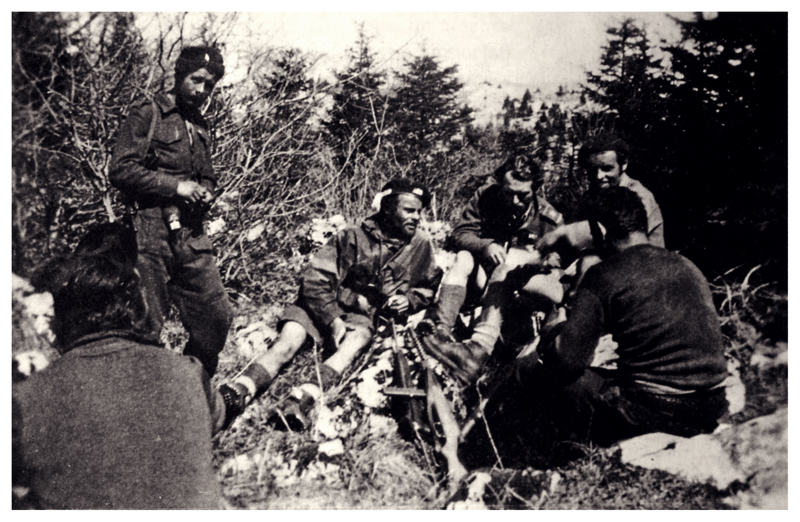
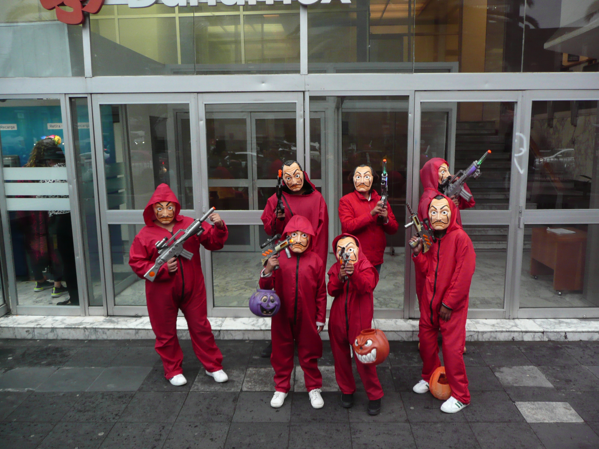

Ecco perché non cantare Bella Ciao in Spagna
Poco tempo fa ha fatto scalpore un video della cantante Laura Pausini dove, durante una trasmissione televisiva spagnola, l’artista si è rifiutata di cantare “Bella Ciao ” in quanto secondo lei “troppo politica”. Ma è davvero così? Non c’era forse una risposta più adatta da fornire? E se è una canzone troppo schierata, il rifiutarsi di cantarla implica di non aver preso le parti di nessuno? In questo articolo proveremo a rispondere a tutte queste domande, ma per capire meglio il quadro è bene parlare un po’ di storia.
L’8 settembre 1943 viene proclamato l’armistizio di Cassabile con cui l’Italia si arrende senza condizioni alle forze alleate. Tuttavia, la Seconda Guerra Mondiale non è ancora finita e nel Centro-nord della penisola si forma la Repubblica Sociale Italiana, di fatto stato fantoccio tedesco con a capo Benito Mussolini. È in questo contesto che si sviluppa la Resistenza partigiana, il 9 settembre ’43 nasce il Comitato di Liberazione Nazionale il quale raggruppa tutte le anime di questo movimento. La composizione è più eterogenea possibile: comunisti, monarchici, democristiani, socialisti, anarchici ed altri ancora. Tutte queste parti sono unite da un singolo sentimento: l’opposizione al nazifascismo.
All’interno delle varie compaggini della Resistenza si sviluppano vari canti tra i combattenti, ed è qui che entra in gioco Bella Ciao. Gli storici non sono concordi in merito alle sue origini, c’è chi dice che sia nata durante il Secondo conflitto mondiale e chi invece ne attesta la nascita nel secondo dopoguerra, a circa la metà degli anni 50. Tuttavia, alcuni recenti studi affermano che sia stata già cantata dai partigiani emiliani e abruzzesi, ma il dibattito è decisamente aperto. Ciò che è sicuro è che il canto popolare ha acquisito una fama internazionale lungo il Novecento, diventando un inno internazionale alla libertà. Ovviamente, l’uso avvenuto nella fortunatissima serie spagnola la “Casa di carta” ne ha rilanciato il successo, anche in ambiti non propriamente di rivolta, come ne testimoniano i numerosi remix.
Ciò detto, Bella Ciao è una canzone politica? Assolutamente sì, ma in senso buono. Di quella visione politica che separa il nazifascismo da tutto ciò che nazifascismo non è, da tutto ciò che è democratico. Ecco perché è impossibile non prendere posizione in merito, anzi, farlo significa prenderla eccome. Significa rendere contenti, e farsi strumentalizzare, da quei partiti di estrema destra che etichettano Bella Ciao come una “canzone di sinistra” e si rifiutano di cantarla, anche se come abbiamo visto la Resistenza è stata decisamente formata da diverse anime politiche al suo interno. A riprova della sua universalità, al giorno d’oggi provoca quasi ilarità pensare che il congresso democristiano (quindi centro-destra) del 1976 si è chiuso proprio sulle note di questa canzone.
Ovviamente le posizioni di Laura Pausini in merito non si possono sapere, ma certo è che la motivazione data per non cantare la canzone è troppo riduzionistica. Difatti, da parte sua una risposta ben più concreta sarebbe stata: “Non snaturo una canzone così pregna di significato per il mio paese in un programma spagnolo qualunque”. Dall’uscita della “Casa di Carta”, infatti, Bella Ciao sembra diventata una canzone frivola e di poco conto, andando a cozzare con tutti i valori che il testo recita.
Fonti: Il Post,SkyTg24,Corriere della Sera